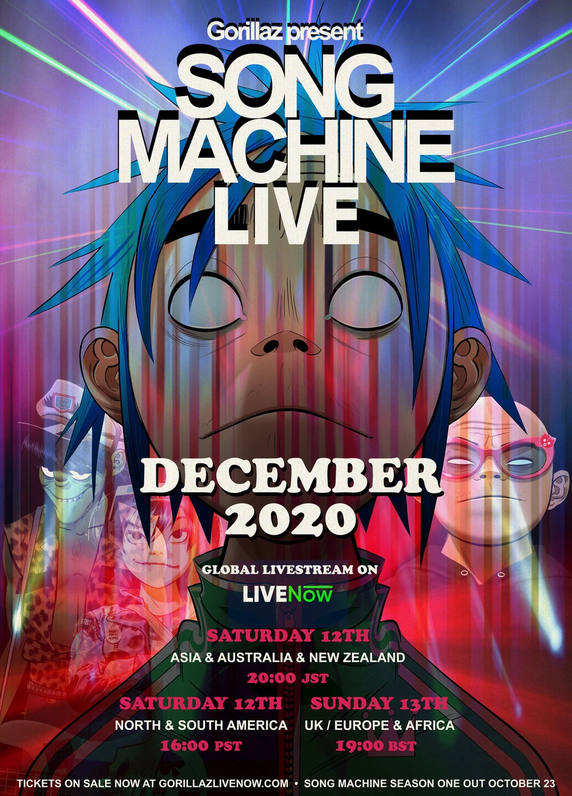
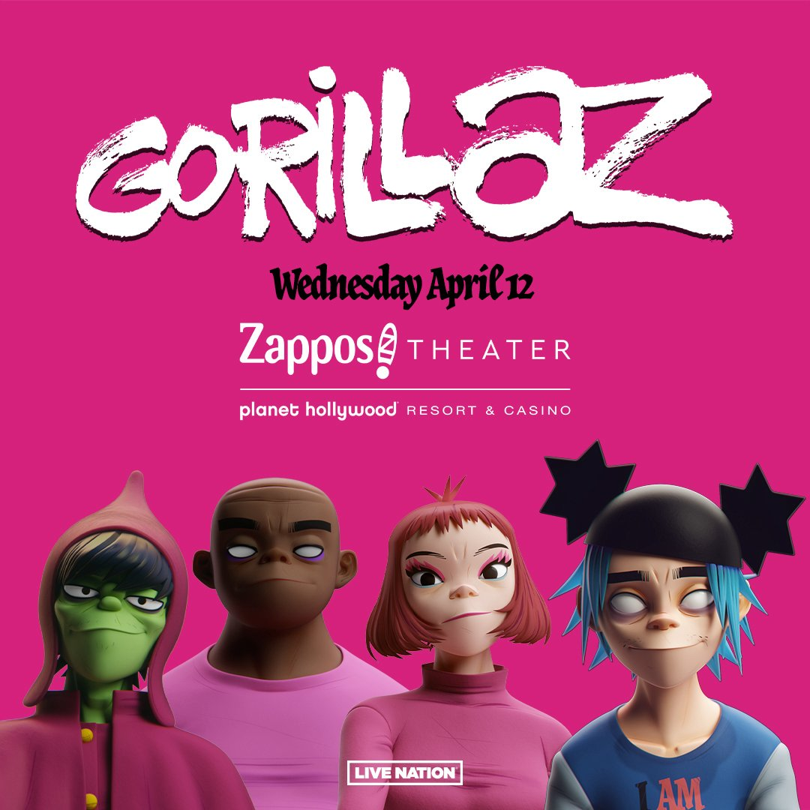

TOUR DATES
Remember to book your tickets!
- June Sold-out
- December Sold-out
- April 3

Boiler Room (Tokyo)
June 24,2018
Gorillaz have released four singles ahead of The Now Now, including “Fire Flies,” “Lake Zurich,” “Sorcererz,” and “Humility (feat. George Benson),” which features an accompanying music video. A large North American tour follows the album release, making stops in New York, Chicago, and even a Demon Dayz festival in LA. The Now Now drops June 29 via Parlophone and Warner Bros. Records.

Global Livestream
December 2020
Nothing is going to stop Gorillaz from performing Song Machine Live for you in 2020! A global live stream, with 3 performances across 3 different time zones. Coming to you live and direct from London on December 12 & 13th.

Planet Hollywood
April 12,2023
Gorillaz will perform a rare, intimate one-off show at Zappos Theater at Planet Hollywood Resort & Casino on Wednesday, April 12, 2023.